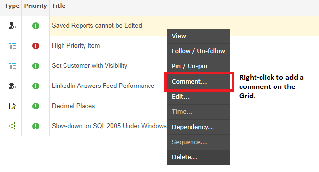
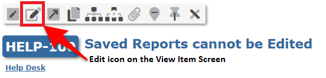
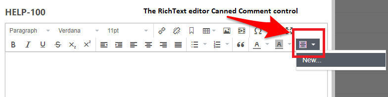

You can create standard responses to common queries so that when such queries arrive you can respond in a quick and consistent manner.
Create as many 'canned' replies as you need, and even create them on the fly. You can choose to use these responses for email replies only, as manual comments only, or for both purposes.
When you create a standard response for use as a manual comment, you can also determine if it may be used in either the description or the comment field, or in both.
For comments, you can restrict the availability of these standard responses to certain User Groups, meaning customers can see one set of comments and the internal team another set.
You can also create project-specific standard responses; particularly useful if you separate your customers into different projects as opposed to keeping them in a single project, separated by User Group and Permissions, or by Organizations.

NoteIf you are creating Canned Comments in the Ticketing section, you will not see the "Associated Areas" or User Group selections in the image above as the associated area is pre-defined as exclusively 'Breeze' (email reply).
To create a canned comment that can be used as a manual comment or description, edit a description in the View Item screen, or add a Comment (you can simply right-click any item on the Grid), and select the Canned Comment drop-down


The Rich Text Editor that pops up has the Canned Comment control. If there are existing responses linked to the area of the application and project(s) you are in, they will be available for selection. There will always be the option to add a new standard response on the fly.

The following table shows the valid properties of the canned response model:
| Field | Description |
|---|---|
| ToFirstname | The first name of the user we are responding to |
| ToSurname | The surname of the user we are responding to |
| ToEmail | The email of the user we are responding to |
| User.Entity.Firstname | The first name of the user who is posting the reply |
| User.Entity.Surname | The first name of the user who is posting the reply |
| User.Entity.Fullname | The full name of the user who is posting the reply |
| VersionStartDate | The start date of the version that is associated with the item |
| VersionReleaseDate | The release date of the version that is associated with the item |
| TheItem.AffectedVersionNumbers | Any associated affected versions (comma separated) |
| TheItem.Age | Number of days since item created |
| TheItem.ClosedDate | The date and time this item was closed |
| TheItem.ComponentNames | Components associated with item (comma separated) |
| TheItem.Comments[n].Entity.Comment | Collection of all comments where "n" represents index of comment |
| TheItem.Created | The date and time when the item was created |
| TheItem.CustomFields["your custom field name"].Entity.Data | |
| TheItem.Description | The full description of the item |
| TheItem.DueDate | When work should complete for the item |
| TheItem.Elapsed | Number of minutes since item opened till closure |
| TheItem.EstimatedEffort | The number of hours and minutes to complete item (0h 0m format) |
| TheItem.ExcessTime | The number of hours and minutes exceeding original estimate (0h 0m format) |
| TheItem.FixedInVersion | Any associated version |
| TheItem.Id | The id of the item (e.g. 23456) |
| TheItem.IssueKey | The key of the item (e.g. GEM-23456) |
| TheItem.LastComment | Latest comment for the item |
| TheItem.LoggedHours | Total number of hours logged against this item |
| TheItem.LoggedMinutes | Total number of minutes logged against this item |
| TheItem.OriginatorData | Any associated source data for item (e.g. email address) |
| TheItem.PercentComplete | How much work has been completed (e.g. 25%) |
| TheItem.Points | Allocated points for item |
| TheItem.Priority | The current priority of the item (e.g. High) |
| TheItem.ProjectCode | The project code that the item belongs to (e.g. ACME) |
| TheItem.ProjectName | The project name that the item belongs to (e.g. My Project) |
| TheItem.RemainingTime | The number of hours and minutes to remaining for item (0h 0m format) |
| TheItem.Reporter | The fullname of the user who reported the item (e.g. Joe Bloggs) |
| TheItem.Resolution | The current resolution of the item (e.g. Complete) |
| TheItem.ResolvedDate | The date and time this item was marked as resolved |
| TheItem.ResourceNames | The resources assigned to the item (comma separated) |
| TheItem.Revised | The date and time when the item was last revised |
| TheItem.Reviser | The name of the user who last revised the item |
| TheItem.Severity | The current severity of the item (e.g. Showstopper) |
| TheItem.IsInSLA | Check if the item part of SLA |
| TheItem.SLATimeLeftFull | The SLA time left in days hours minutes format (1d 2h 3m) |
| TheItem.SLATimeLeftMinutes | How many minutes left for SLA |
| TheItem.SLATimePassedMinutes | How many minutes have passed for SLA |
| TheItem.StartDate | When work should commence on the item |
| TheItem.Status | The current status of the item (e.g. Unassigned) |
| TheItem.TimeLogged | The number of hours and minutes to logged against item (0h 0m format) |
| TheItem.Title | The title of the item (e.g. Fix Cross-browser issues) |
| TheItem.Type | The type of the item (e.g. Bug) |
| TheItem.Visibility | The visibility of the item (e.g. Everyone) |
| TheItem.Votes | The number of votes for this item |
The Email Reply editor allows you to select from a list of canned responses that are specific to Breeze, and, if you have made your responses project-specific, to the project the ticket belongs to.

NoteIf you do not see the Email Reply section in the View Item page, please ensure your Screens are configured correctly to allow Email Reply.

NoteIn order to create a new standard response on the fly, users must have the "Can Set Project Default Values" role in the permission set for the project the ticket/item is in.